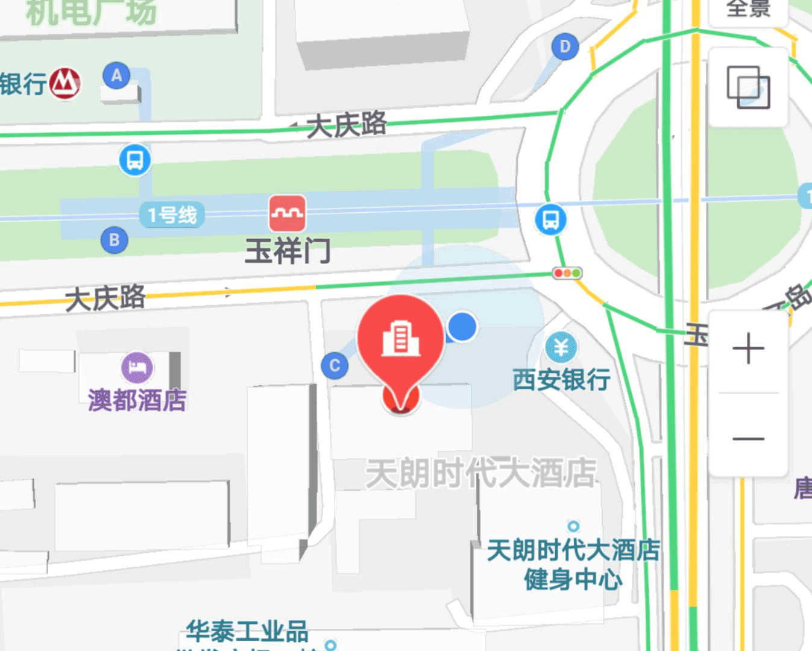

“全民媒婆”是陕西搜恋网络科技有限公司旗下的一款婚恋交友app，是一款基于共享社交理念打造的单身交友平台。陕西搜恋科技有限公司成立于2015年，她位于全国著名的旅游城市，十三朝古都——陕西省西安市。旗下有“搜恋约会平台”和“全民媒婆” 两款婚恋app。
为响应省团委的号召，转变传统婚恋模式，搜恋网络科技有限公司花费大量的人力物力开发出一款帮助身边人找到真爱的婚恋交友app“全民媒婆”。其主要功能是动员各界人士争当媒婆，为身边的朋友保媒，单身男女加入好友单身团，和朋友的朋友谈恋爱。让婚恋交友更放心，更安全，更有效。
陕西搜恋网络科技有限公司是陕西最具影响力的本土婚恋服务企业，拥有精湛的技术开发团队、资深的运营团队和专业的一对一红娘服务团队。她以帮助当地单身男女解决婚恋问题为主业，集婚恋app开发、产品运营为一体。企业注册资本1000万元。
陕西搜恋网络科技有限公司以“打造中国最受欢迎的020约恋平台”为企业愿景，以“认真、快、坚守承诺”作为企业经营理念，以“让天下所有人找到真爱”作为企业核心使命，并朝着全国性发展的目标奋力前进，是一个极具活力与前景的新型民营企业。搜恋科技立志于一流的服务，一流的信誉来回馈用户，报效社会。
微信服务号：全民媒婆
客服电话：400-6235-520
地址：西安市莲湖区玉祥门外恒天财智大厦12层
